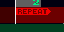

ピストンコラージュの特徴
■特徴１「音源」
音源には WAVEファイル(PCM) と専用音源ファイルが使える。
WAVEファイルなら、無料配布や市販されているものを使える。
自作の WAVEファイルを使えば、より個性のある作曲活動ができる。
専用音源ファイルは専用ソフトで作成できてPCMに比べて格段に小容量。
バージョン0.9.0.0以降は圧縮音声形式のoggも使えるようになった。
ピストンコラージュで作った曲はピストンプレイヤーで再生することができる、
WAVEファイルとしても出力することができるから、いろいろな場面で活用できる。
ピストンコラージュで作った曲を自作のプログラムで再生することができる。
用語説明
| プロジェクト | ピストンコラージュで作成する曲データのこと。 |
| 音源 | プロジェクトに追加された音色のこと。 |
| ユニット | 音源を使用して演奏をする奏者のようなもの。 １つのユニットは１つの音を鳴らすことが出来る。 同時に鳴らしたい時は複数のユニットを用意する。 |
| イベント | 各ユニットが持つ演奏データ。 音を鳴らすイベント「ONイベント」 音階を変えるイベント「キーイベント」などがある。 マウス操作でいろんなイベントを置いたり消したりできる。 |
| ビルド | 曲データを WAVEファイルに出力すること。 |
画面説明
■基本的な部位の名称
| ミニウインドウ ラック |
４種類のミニウインドウを出したり入れたりする。 プレイヤーと、プロジェクト エフェクターと、コピーオプション 
|
| コメントボタン | プロジェクトに付けるコメントを入力する。 |
| スケールパネル | イベントの表示の幅やグリッドを変更する。 |
| ツールパネル | 画面モードを切り替えたり、音源やユニットの追加をする。 |
| プレイヤー | 制作中の曲をいつでも再生・停止できる。 |
ピストンコラージュには３つの画面モードがある。
ツールパネルにあるタグで画面モードを切り替える切り替える。
 | 音源編集モード |
| ユニット編集モード | |
| キー編集モード |
■音源編集モード
音源の追加・変更・削除をおこなうモード。
以下は音源を３つ追加した画面。
| 音源トレイ | プロジェクトに追加した音源が並びます。 ドラッグで順番を変更することができる。 |
| 音源情報フィールド | 音源の情報を表示 |
■ユニット編集モード
ユニットの追加・削除とイベントの編集をおこなうモード。
以下はユニットを３つ追加してイベントを配置した画面。

| ユニットトレイ | プロジェクトに追加したユニットが並ぶ。 |
| 再生フィールド | 再生する範囲や、演奏がループする区間を指定できる。 |
| スコープフィールド | 範囲を指定してコピーや削除ができる。 |
| イベントフィールド | クリック・ドラッグでONイベントを編集する。 |
| ボリュームパネルスイッチ | ボリュームパネル等を開く（後で詳しく） |
■キー編集モード
選択中のユニットのキーイベント編集をおこなうモード。
上部に表示されるユニットフィールドでONイベントの編集もできます。
| ピアノロールキーボード | ここをクリックすると音が鳴ります。 |
| ピアノロールイベントフィールド | クリック・ドラッグでキーイベントを編集する。 |
プロジェクトの設定
プロジェクト設定画面で曲の名前やテンポを設定する。
| 名前 | 半角16文字以内 |
| 拍子 | 曲の拍子 |
| ビートテンポ | 曲の速さ（ 20 から 400 まで ） |
| 小節数 | 曲の長さ 現在イベントのある範囲が最小値 （イベントの編集中に自動的に増える） |
| サンプリングサイズ | サンプリングサイズと曲の長さ（秒） |
音源の追加と操作
ツールパネルの + ボタンを押して、音源ファイルを選択する。
■音源の変更・設定・削除・エクスポート
音源を右クリックして音源メニューを表示
| CHANGE | 音源ファイルを選びなおす |
| EDIT | 設定を変更する（後で詳しく） |
| REMOVE | 音源を削除 |
| EXPORT | 音源をファイルに出力 |
■音源設定画面
| タイプ | 音源の種類 |
| 名前 | 半角16文字以内 |
| 情報 | 音源の情報 |
| 基本キー | 音源が表すキー（69がラ） |
| 補正 | 周波数に対する補正値 |
| ループ | 音をループさせる |
| 音末処理 | 音の終端のノイズを消す |
| 拍で補正 | ドラムループ音源などを指定の拍数にフィットさせる 使用する場合は補正の値が拍数になる （例：４拍のループ音源なら補正 = 4） |
ユニットの追加と操作
■ユニットの追加
ツールパネルの + ボタンを押して、ユニット名と使用音源を選択する。

■ユニットの名前を変更・削除
ユニットを右クリックしてユニットメニューを表示
| EDIT | ユニットの名前を変更 |
| REMOVE | ユニットを削除 |
■ユニット設定画面
| イベント数 | ユニットに配置されているイベントの数 |
| 名前 | 半角16文字以内 |
■ユニットの選択・並び替え
左クリックでユニットを選択。
ドラッグ＋ドロップで並び替え。
CTRLキーを押しながら左クリックで複数選択。
■ユニットの消音
ユニットトレイ左端のシンボルをクリックで消すと
そのユニットは再生中に音を出さなくなる。
イベントの配置
ユニットのイベントフィールドを左クリック＋ドラッグで ONイベントを配置。
オレンジ色の線の長さが音を鳴らす時間の長さになる。
右クリック＋ドラッグでイベントを削除。
■キーイベント
キー編集モードでキーイベントを配置する。
キーイベントの配置には２つのモードがある。
 | キーイベントと同時にon/offイベントも配置 |
| キーイベントのみを配置・削除 |
左クリック＋ドラッグしてキーイベントを配置。
右クリック＋ドラッグでイベントを削除。
カーソルキーの上下で編集ユニットを切り替える。
ユニットが複数選択されている場合は編集ユニット以外のイベントを青色で表示。
■その他のイベント
ONイベント・キーイベント以外のイベントはボリュームイベントフィールドで配置する。
画面左下のボリュームパネルボタンでボリュームイベントフィールドを表示。
| VELOCITY | ベロシティ | 音の強さ。 |
| PAN (VOLUME) | ボリュームパン | 音の位置を音量で表現。 |
| PAN (TIME) | 時間差パン | 音の位置を時間差で表現。 |
| VOLUME | ボリューム | 音量。 |
| KEY PORTA | キーポルタメント | キーの変化を滑らかにする。（後で詳しく） |
| VOICE NO | 音源番号 | 音源の変更。 |
| GROUP NO | グループ番号 | グループの変更。（エフェクトで使用する） |
| KEY CORRECT | キー補正 | 周波数に対する補正値。 |
ポルタメントについて
ポルタメントはキーを滑らかに変化させるイベント。
これを使えばピッチベンドやビブラートなどの表現ができる。
ポルタメントイベントは「ONイベント」と同じで
ラインの長さがキーの以降時間になる。
ドラッグ無しのクリックでゼロを配置できる。
ポルタメントイベントはループ開始位置に戻るか
次のポルタメントイベントに来るまで有効。
↑設定されたポルタメント時間でキーが滑らかに変化する。
↑ポルタメントが設定されていても、
ONイベントがある場合は滑らかにならない。
イベント編集メニュー
スコープフィールドをドラッグで範囲選択。
範囲を選択した状態で右クリックでメニューを呼び出す。

| COPY | コピー |
| CUT | コピーして削除 |
| CLEAR | 消す |
| DELETE | 消して詰める |
| TRANSPOSE | キーイベント一括変更 |
| SCOPE | 数値入力で範囲を設定する |
スコープフィールドをドラッグ無しのクリックで位置選択。
位置を選択した状態で右クリックでメニューを呼び出す。
| PASTE | コピーしたものを貼り付け |
| INSERT | コピーしたものを挿入 |
| SCOPE | 数値入力で範囲を設定する |
ドラッグが面倒な広い範囲の場合は scope を使ってください。
曲のリピート範囲と終端
再生フィールドで曲のリピートイベントや終端イベントを配置する。
リピートイベントも終端イベントも１つのプロジェクトに１つまで配置できる。
|  | リピートイベント | 曲の再生は終端からこの位置へジャンプする。 |
| 終端イベント | 曲の終端を指定できる。 配置しない場合はプロジェクトの小節数で終端が決まる。 |
目的の小節で再生フィールドを右クリックしてメニューを呼び出す。
| Set Repeat | リピートイベントを配置 |
| Set LAST | 終端イベントを配置 |
| Cut Repeat | リピートイベントを削除 |
| Cut LAST | 終端イベント削除 |
プレイヤー
プレイヤーを使って編集中の曲を再生する。
再生フィールドで一時的な再生範囲を指定することもできる。
| loop | 曲の終端まで再生したらリピートイベントか 曲の先頭に戻って再生を続行。 |
| scroll | 再生にあわせてフィールドを自動スクロールする。 |
| mute | ユニットの消音を有効にする。 |
■一時的な再生範囲の設定
再生フィールドを左クリックして一時的な再生範囲を指定する。
小節の最初の方を左クリックすると開始位置（start）を指定。
小節の末端の方を左クリックすると終了位置（end）を指定。
同じ場所でもう一度クリックすると削除します。
注：この再生範囲はプロジェクトファイルには保存されない。
完成した曲のファイル出力
完成した曲は試聴専用ファイル(*.pttune)やPCM形式(*.wav)で出力することができる。
| *.pttune はピストンプレイヤーかDLLでのみ 再生することができる。編集することはできない。 |
汎用的（だと思われる）非圧縮サンプリング形式。 |
注：*.wav の出力は時間がかかります。
エフェクト（簡易）
現在、ディレイとオーバードライブのエフェクトが使用できます。
| グループ | ディレイを適用するグループ番号。 |
| 単位 | 周波数が基準にする単位。 |
| 周波数 | 反復回数。 |
| 割合 | 減退する割合。 |
ディレイ設定例と結果
■ オーバードライブ（割れた音にする）
| グループ | オーバードライブを適用するグループ番号。 |
| カット | カットする割合。 |
| 増幅 | カット後の音量を調整。1.0で変化無し。 |
オーバードライブ設定と結果
コメントを付ける
コメントボタンで、コメント画面を開く。
環境設定
メニューのプロジェクト → 設定 → 環境設定 で音質などを変更。
音質を下げることでアプリケーションの処理を軽くすることができる。
| チャンネル | モノラルもしくはステレオ |
| サンプルビット | １サンプルを表現するのに使用するビット数 |
| 秒間サンプル | １秒を構成するサンプル数 |
| デバイス | 再生に使用するデバイス |
| バッファ | クリックしてから音が鳴るまでの時間 PCの性能が許すなら 0.03 ぐらいが理想 |
| フォント | プロジェクト・音源・ユニットの名前表示に使用するフォント |
ショートカットキー
キーボード操作でいくつかの処理がワンタッチで行える。
| １つ戻す | CTRL + Z |
| やり直し | CTRL + Y |
| 全小節選択 | CTRL + A |
| 上書き保存 | CTRL + S |
| コピー | CTRL + C |
| 切り取り | CTRL + X |
| 貼り付け | CTRL + V |
| 簡易再生/停止 | スペース |
| 編集ユニットの変更 | カーソルの上/下 |
| 横スクロール | SHIFT + マウスホイール またはカーソルの左右 |
| 縦スクロール | マウスホイール |
| 表示倍率の変更 | CTRL + マウスホイール |